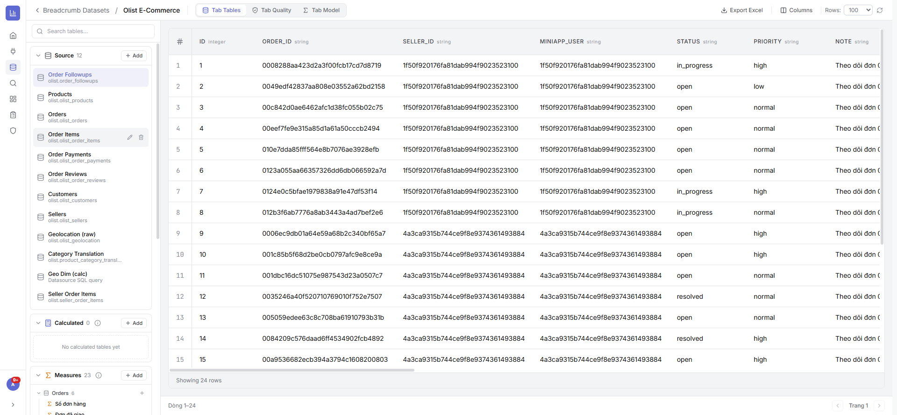
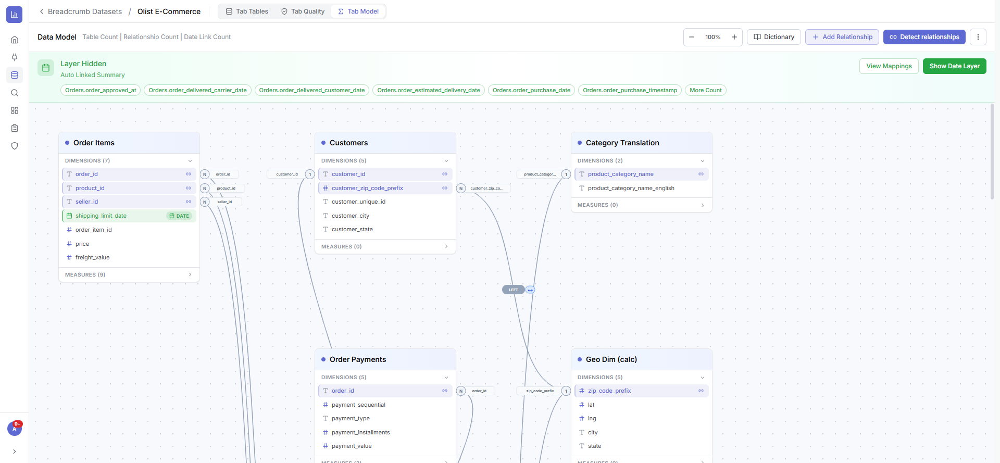
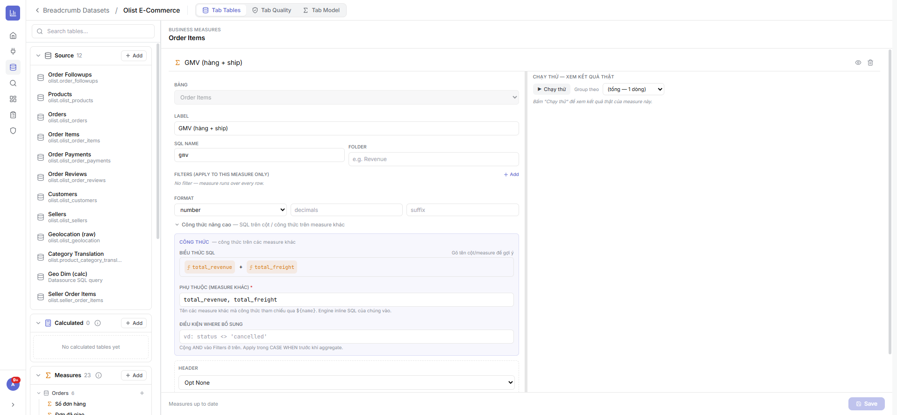
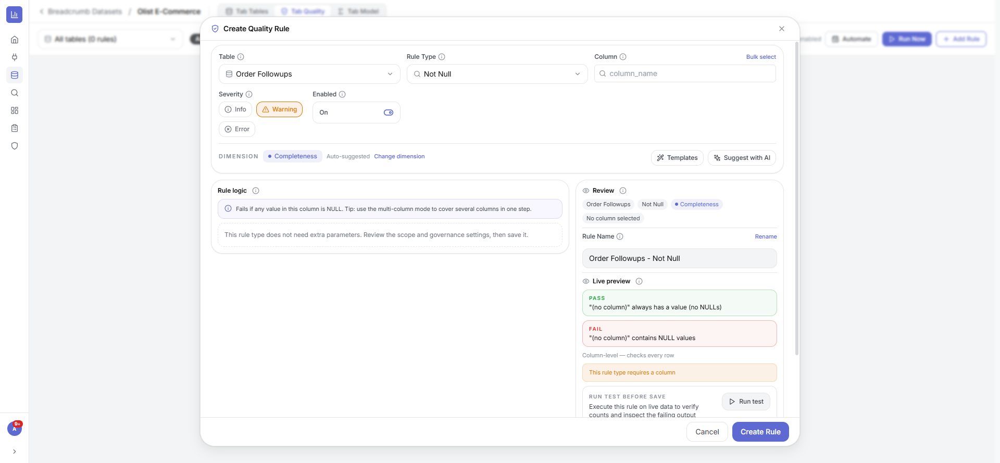

Lớp ngữ nghĩa biến dữ liệu thô thành mô hình sẵn sàng phân tích: gom nhiều bảng, định nghĩa quan hệ, tạo chỉ số (Measure), kiểm soát chất lượng — “nguồn sự thật” dùng chung cho báo cáo & mini-app.
Gom bảng theo nhóm (Source / Calculated / Calendar / Measures), lưới xem trước dữ liệu, quản lý cột & xuất Excel.

Sơ đồ trực quan các bảng & đường nối; tạo/sửa quan hệ (loại join, cardinality, cross-filter). Nút Generate Model tự dò quan hệ theo khoá ngoại.

Định nghĩa chỉ số tái sử dụng (biểu thức, bộ lọc riêng, định dạng, folder, phụ thuộc) — chuẩn PowerBI cho số liệu.

Giám sát theo Completeness/Validity/Uniqueness/Consistency/Timeliness/Accuracy với 13 loại rule, gợi ý bằng AI, xem trước PASS/FAIL, chạy theo lịch.
